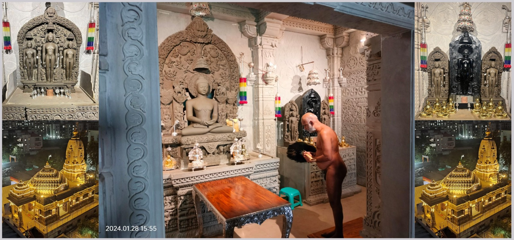
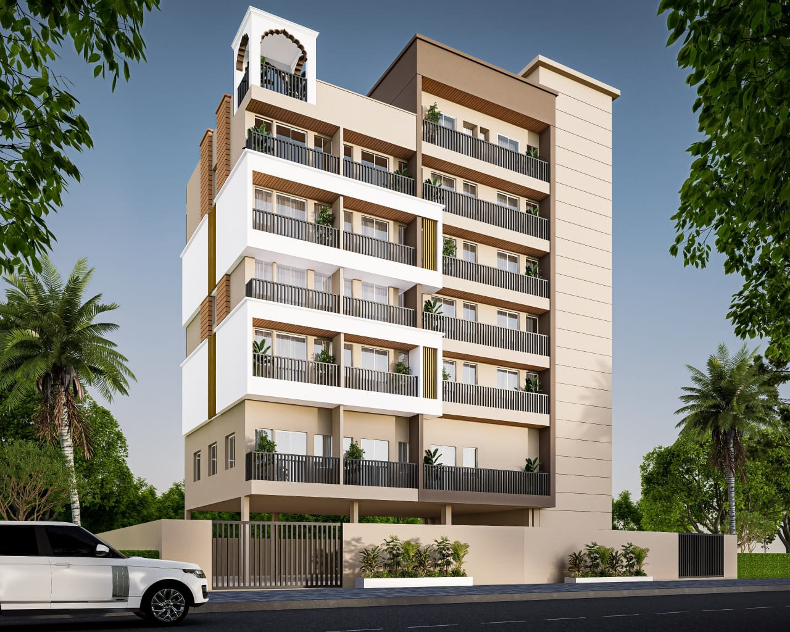

श्री 1008 नेमिनाथ दिगंबर जैन मंदिर
Shri 1008 Neminath Digamber Jain Mandir, located in the Gyanoday Digambar Jain Society at Sus, Pune, is a sacred temple dedicated to Lord Neminath, the 22nd Tirthankara. This beautiful temple serves as a spiritual hub for the Jain community, offering a place for prayer, meditation, and religious ceremonies.
Photo Gallery



About the Temple
The temple is architecturally designed following traditional Jain principles and serves as a peaceful sanctuary for devotees. It is known for its serene atmosphere, well-maintained premises, and community activities. The temple hosts regular religious ceremonies, festivals, and cultural events celebrating Jain traditions throughout the year. Explore the beauty and spirituality of the temple through our active community.
संत निवास - विद्या शान्ति निलय
प्रस्तावित संत निवास
जैन संघ पुणे द्वारा मंदिर परिसर के भीतर 'विद्या शांति निलय' नामक एक संत निवास (साधुओं के रहने का स्थान) का निर्माण किया जा रहा है। यह निवास स्थान जैन साधुओं के ठहरने, ध्यान लगाने और आध्यात्मिक साधना करने के लिए एक शांत और अनुकूल वातावरण प्रदान करेगा।
विशेषताएं और लाभ
यह संत निवास यहाँ रहने वाले साधुओं की आध्यात्मिक आवश्यकताओं को पूरा करने के लिए बुनियादी सुख-सुविधाओं और साधनों से सुसज्जित होगा, जिससे मंदिर और इसकी धार्मिक गतिविधियों के साथ एक गहरा जुड़ाव स्थापित हो सके।

Location, Timing & Contact
Shri 1008 Neminath Digamber Jain Mandir
Near Bhagawan Neminath Chowk, Sus, Pune - 411021
Maharashtra, India
| Email: | susjainmandir@gmail.com |
| Phone: | +91 8799928255 |
| WhatsApp: | +91 8799928255 |
🌅 Morning
🌆 Evening
Visiting Information & Amenities
- Located at Bhagawan Neminath Chowk in Sus, Pune with easy accessibility via major roads.
- Ample parking facilities available inside the premises for all devotees.
- Close to public transportation connections.
- Clean, well-maintained prayer halls and peaceful spaces designated for meditation.
- Community gathering areas and full facilities to conduct religious ceremonies and functions.
* The temple welcomes devotees and visitors throughout the year. For specific event timings and festival celebrations, please contact the temple directly.
"भक्तों के लिए मंदिर पूरे दिन दर्शन, पूजन और ध्यान हेतु खुला रहता है।"